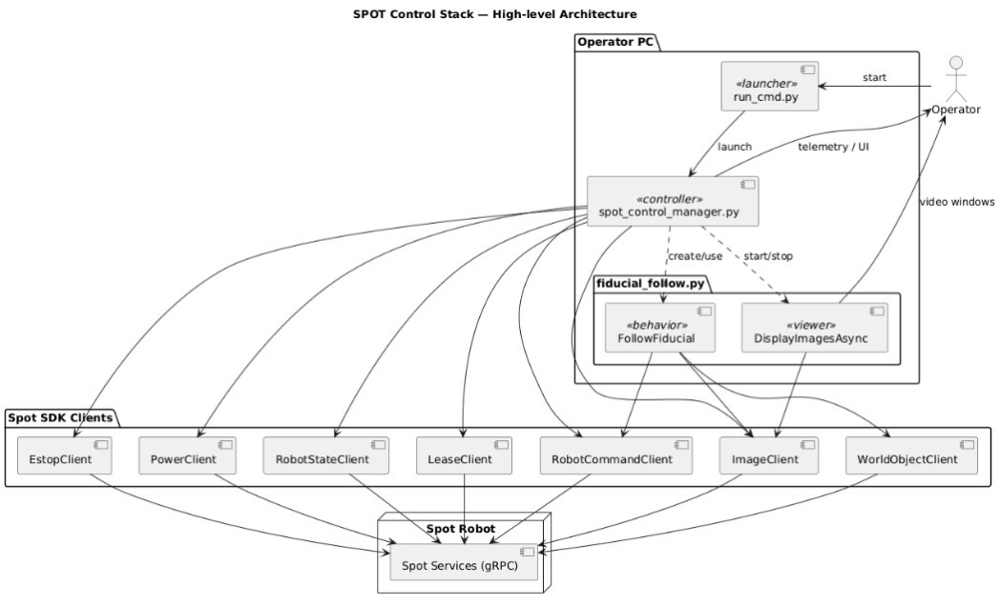

Ausgewähltes Projekt
Autonomous Navigation System for Boston Dynamics SPOT
Systemarchitektur
Ein modulares Python-Steuerungssystem für den Roboter SPOT von Boston Dynamics. SPOT kann selbstständig zwischen markierten Punkten navigieren, während die Bedienperson das Live-Kamerabild beobachtet und jederzeit die Kontrolle übernehmen kann. Eine zentrale Steuerung verwaltet Kommunikation, Bewegung, Energieversorgung und Sicherheit.
